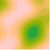
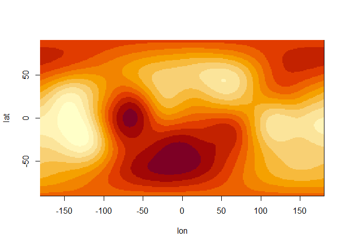

This package provides a high-performance implementation of OpenSimplex2, the successor to the original OpenSimplex noise. It is designed to produce smooth, organic-looking procedural content with fewer directional artefacts (streaking) than traditional Perlin noise.
Installation
This package is currently experimental and can only be installed from GitHub:
remotes::install_github("pepijn-devries/opensimplex2")Example
This library offers two primary methods for generating noise:
N-Dimensional Noise Arrays
Generate a complete grid of noise values in a single call. This is ideal for pre-computing textures, terrain heightmaps, or static displacement maps. There are two variants available:
- OpenSimplex2F (Faster): Optimized for speed, providing a classic OpenSimplex look.
- OpenSimplex2S (Smoother): A “SuperSimplex” variant that prioritizes higher visual quality and reduced grid-alignment artefacts at a slight performance cost.
library(opensimplex2)
## Set seed to obtain reproducible data
set.seed(0)
## Create simplex noise in 3 dimensions:
arr <- opensimplex_noise("S", 100, 100, 100, frequency = 1.5)
## Plot 2D noise while looping the third dimension:
for (i in 1:100) {
image(arr[,,i],
axes = FALSE, ann = FALSE, xaxs = "i", yaxs = "i",
zlim = c(-1, +1), col = hcl.colors(palette = "Terrain", 10))
}
Continuous Gradient Fields
Beyond static arrays, the library provides a sampleable gradient field. Instead of just returning a single noise value, this allows you to query the vector gradient at any precise n-dimensional coordinate.
## Let's create a raster of polar coordinate:
r <- .5
lon <- seq(-180, 180)
lat <- seq(-90, 90)
coords <-
expand.grid(
lon = lon,
lat = lat)
## Now convert the polar coordinates to Cartesian coordinates:
coords$x <- r*cos(pi*2*coords$lat/360)*sin(pi*2*coords$lon/360)
coords$y <- r*cos(pi*2*coords$lat/360)*cos(pi*2*coords$lon/360)
coords$z <- r*sin(pi*2*coords$lat/360)
## Set seed to make the example reproducible:
set.seed(0)
## Let's create a noise gradient 3-dimensional space:
space <- opensimplex_space("S", 3L)
## Sample the space at the coordinates on the sphere:
coords$value <- space$sample(coords$x, coords$y, coords$z)
## Plot the sampled matrix:
mat <- matrix(coords$value, length(lon), length(lat))
image(x= lon, y = lat, z = mat)
Unlike an array, the field is mathematically continuous. You can sample at any scale or offset without losing precision. This is useful for physics simulations (like flow fields or wind), surface normals for lighting, or calculating the “slope” of procedural terrain for erosion and placement logic.
Acknowledgements
This package wraps the C-code by Marco Ciaramella, which in turn is a translation of the original Java code by KdotJPG.
Code of Conduct
Please note that the opensimplex2 project is released with a Contributor Code of Conduct. By contributing to this project, you agree to abide by its terms.